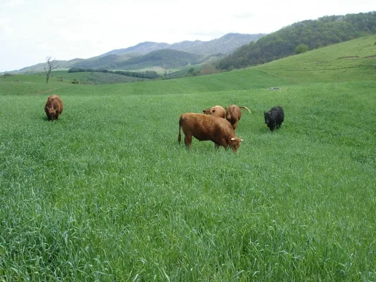
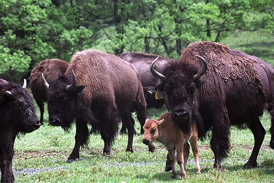
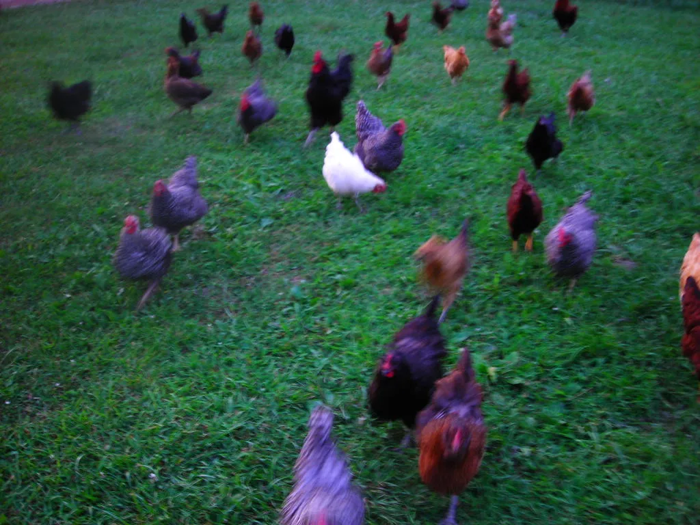
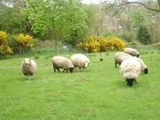
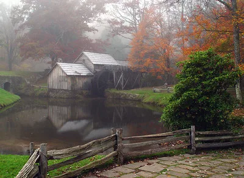
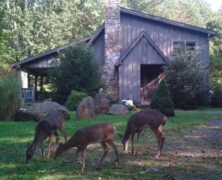

Home / Floyd, VA
Floyd, VA & the Blue Ridge Parkway
We offer on-premise catering for budget weddings: we have 25 acres on the Blue Ridge Parkway near Chateau Morrisette, mile marker 171.5. Floyd is a Mecca for organic farmers, artisan cheese makers, free range poultry, beef, pork and buffalo.
On the farm
We also offer cooking classes and wild game cooking classes, and guided wild mushroom hunting in spring, summer and early fall.
- Cooking Classes
- Weddings and Events
- Private Parties
- Floyd Fest Catering
- Mushroom Hunting
- Skeet and Trap
- Pheasant and Quail Hunts
- Game Cookery Classes
- Food History Classes
- Smoking and Curing Meat Classes
We are in Floyd, Roanoke and Blacksburg. Please don’t hesitate to call or write; we have discounts across the board for Virginia customers. Across from Floyd Fest: private camping with gourmet dining and parties — call for details.

Our neighbors




